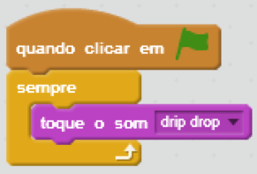
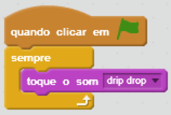

Tocar música de fundo
Selecione a guia Sons  .. Escolha a música da biblioteca
.. Escolha a música da biblioteca  ou faça upload de um arquivo . Este script continuará tocando a música em segundo plano:
ou faça upload de um arquivo . Este script continuará tocando a música em segundo plano:

.. Escolha a música da biblioteca 
Sua música é interrompida? Verifique se está usando o bloco que reproduz o som até que esteja pronto:
Quer que a música pare no final do seu programa? Adicione este bloco no último script: